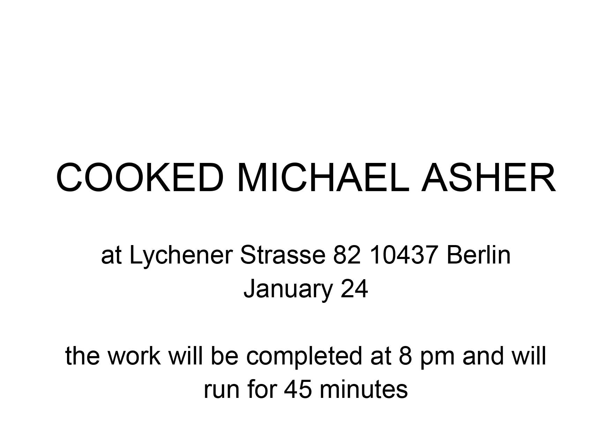

All utensils, electrical devices, and other objects are removed from the kitchen. For 45 minutes, all four stove burners are set to maximum heat; the oven is set to its highest temperature with the door left open; the faucet runs at its hottest setting; the refrigerator operates at its lowest possible temperature with the door open; the heater is set to maximum and all windows in the kitchen are opened as wide as possible.


Cooked Michael Asher
Lychener Str. 82, 10437 Berlin
January 23, 8.00 - 8.45pm